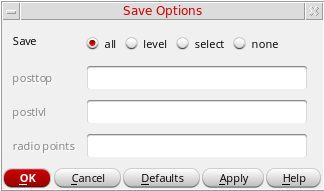

16
Working with HSPICE Simulator
This chapter decibels the interface used to specify the HSPICE simulator in Virtuoso ADE Explorer and how to specify the HSPICE simulator options.
- Introduction to HSPICE Direct Simulator
- HspiceD Features
- Specifying HSPICE Options
- Setting up Reliability Option
Introduction to HSPICE Direct Simulator
The Virtuoso ADE Explorer contains a direct integration of the HSPICE simulator. ADE’s HSPICE integration (HspiceS) used to be based on the socket methodology, which required edit permissions to the schematic being simulated, and caused usage issues such as subcircuit name mapping. These restrictions have been lifted with the direct interface.
There are several advantages of the direct simulator integration approach over the socket simulator integration approach, namely:
-
Improved Performance in Netlisting
Netlisting is much faster in the direct approach, the direct approach supports incremental netlisting. This ensures enhanced performance when incremental updates are performed in a design and then netlisted. -
Better Readability of Netlists
The netlists are truly hierarchical and all numeric values in the netlist are more readable. For example in Hspice socket, the numeric values are changed from -5.0 to -5.0000000 in the final netlist. Also, the sub-circuits are no longer unfolded. The sub-circuits are also no longer mapped unless necessary.
To customize the format of a netlist file, you can set the following SKILL variables in your.cdsinitfile or CIW:-
hspiceSoftLineLengthvariable to control the maximum length of a line of netlist output after which line is automatically split into multiple lines for convenient reading. You can set this variable to an integer value less than or equal to 1024 characters. This variable overrides the OSS variable,softLineLength, which is set to 1024 by default. -
hspiceMaxLineLengthvariable to increase or decrease the maximum limit on the number of characters to be printed in a line of netlist output from the default. This variable overrides the OSS variable,maxLineLength. ThehspiceSoftLineLengthvalue can never be greater thanhspiceMaxLineLengthvalue.
For more information, see the Customizing the Hierarchical Netlister (HNL) chapter of the Open Simulation System Reference.
You can use HSPICE reserved words, temper and hertz, as design variable names in the netlist without OSS remapping them. For more information, see the hnlReservedNameList section of the Open Simulation System Reference. -
-
Read-only Designs can be Simulated, Provided they are Extracted
A limitation of socket netlisting is that the top cell of a design needs to be editable before the design can be netlisted. The direct approach however, allows read only designs to be simulated.The only pre-requisite being, that the design needs to be extracted first, so that connectivity information is written to the database. -
Advanced Evaluation of Operators
Direct netlisting supports the evaluation of ternary operators (Example,(iPar("r")>2e-3?200e-3:400e-3), whereas the same is not supported by socket netlisting.
To set hspiceD, choose Setup – Simulator. The Choosing Simulator -- ADE Explorer form appears. Select hspiceD simulator in this form.
The Virtuoso Analog Design Environment window displays with the hspiceD simulator selected:
Libraries
The following cells of the analogLib library are updated to contain HspiceD views. The HspiceD simInfo, CDF parameters and netlisting procedures have been added to all these analogLib cells. For more information, see Analog Librray Reference.
HspiceD Features
The use model of the Analog Design Environment for the HspiceDirect simulator is similar to that of the Spectre Direct/Hspice Socket interface. Most of the options work in the same way with a few differences.
Model Libraries
Similar Model Library Setup form is applied for HSPICE simulator. You can enter model file names into the Model Library File field. The list box displays the list of model files to be included. You can also include an optional Section field. When the Section field for a particular model file is defined, the netlist contains the following statement:
.LIB “<modelLibraryFile>” <section>
When the Section field is not defined, the netlist will contain the statement,
.INCLUDE “<modelLibraryFile>”
For detailed information about the form, refer to the section Choosing Model Library Path.
Distributed Processing Support
The Distributed Processing mode is supported only for normal simulation and parametric analysis. For detailed information about Distributed Processing, refer to the
Running Analyses
The Choosing Analyses form helps you to set up and run an analysis. This form is explained in details in the Setting up Analysis chapter of this book. Refer to this section for details about each analysis.
The analyses that are supported are: DC, Transient, AC, Noise and OP. To run an analysis, select it in the Choosing Analyses form. The form re-displays to show the fields that are required for the selected analysis.
Passing Command-Line Options
You can pass the command-line options using the userCmdLineOption option in the Environment Options form.
Alternatively, you can pass the command-line options using the userCmdLineOption environment variable in the .cdsinit file as follows:
envSetVal("hspiceD.envOpts" "userCmdLineOption" 'string "stringvalue")
For example, to set multithreading to 3, you should set the userCmdLineOption environment variable as shown below:
envSetVal("hspiceD.envOpts" "userCmdLineOption" 'string “-mt 3”)
Specifying HSPICE Options
You can specify appropriate HSPICE simulator options using Simulation – Analog Options. These options can be used to modify various aspects of the simulation, including output types, accuracy, speed, and convergence.
The below form appears when you click All Options.
For details about the Analog Options, refer to HSPICE/SPICE Interface Reference.
Model Analysis Options
The Model Analysis Options have been grouped as follows:
- Click Model Analysis Options – General Options to specify DCAP, HIER_SCALE, MODMONTE, MODSRH, SCALE, TNOM using the Hspice General Model Options form.
- Click Model Analysis Options – Mosfet Control Options to specify CVTOL, DEFAD, DEFAS, DEFEL, DEFNRD, DEFNRS, DEFPD, DEFPS, DEFW, SCALM, WL using the Hspice Mosfet Control Options form.
- Click Model Analysis Options – Inductor Options to specify GENK, KLIM using the Hspice Inductor Options form.
- Model Analysis Options – BJT and Diode Options to specify EXPLI using the Hspice BJT and Diode Options form.
DC Analysis Options
The DC Analysis Options have been grouped as follows:
- Click DC Analysis Options – Accuracy Options to specify ABSH, ABSI, ABSMOS, ABSVDC, DI, KCLTEST, MAXAMP, RELH, RELI, RELMOS, RELV, RELVDC using the Hspice DC Accuracy Options form.
- Click DC Analysis Options – Matrix Options to specify ITL1. ITL2, NOPIV, PIVOT, PIVREF, PIVREL, PIVTOL using the Hspice Matrix Options form.
- Click DC Analysis Options – Input and Output Option to specify CAPTAB, DCCAP, VFLOOR using the HspiceDC Input and Output Options form.
- Click DC Analysis Options – Convergence Options to specify CONVERGE, CSHDC, DCFOR, DCHOLD, DCON, DCSTEP, DV, GMAX, GMINDC, GRAMP, GSHUNT, ICSWEEP, ITLPTRAN, NEWTOL, OFF, RESMIN using the HspiceConvergence Options form.
Transient and AC Options
The Transient and AC Analysis Options have been grouped as follows:
- Click Transient and AC Options – Accuracy Options to specify ABSH, ABSV, ACCURATE, ACOUT, CHGTOL, CSHUNT, DI, GMIN, GSHUNT, MAXAMP, RELH, RELI, RELQ, RELV, RISETIME, TRTOL using the Hspice Transient and AC Options form.
- Click Transient and AC Options – Speed Options to specify AUTPSTOP, BKPSIZ, BYPASS, BYTOL, FAST, ITLPZ, MBYPASS, TRCON using the Hspice Speed Options form.
- Click Transient and AC Options – Timestep Options to specify ABSVAR, DVDT, FS, FT, IMAX, IMIN, ITL5, RELVAR, RMAX, RMIN, SLOPETOL, TIMERES using the Hspice Timestep Options form.
- Click Transient and AC Options – Algorithm Options to specify DVTR, IMAX, IMIN, LVLTIM, MAXORD, METHOD, MU, PURETP, TRCON using the Hspice Algorithm Options form.
-
Click Transient and AC Options – Input and Output Options to specify INTERP, ITRPRT, MEASFAIL, MEASSORT, PUTMEAS, UNWRAP using the Hspice Transient Input and Output Options form.
Output Log
This displays the file hspice.out found under the psf directory. This is the file to which the HSPICE output is re-directed.
Convergence Aids
Click Convergence Aids – Node Set (.NODESET) to initialize specified nodal voltages for a DC operating point analysis. The.NODESET statement is used to correct convergence problems in a DC analysis. Setting nodes in the circuit to values that are close to the DC operating point solution enhances the convergence of the simulation. The Select Node Set form works in the same way as the Spectre Direct/HSPICE Socket interface. The netlist will contain the .NODESET statement line.
Click Convergence Aids – Initial Condition (.IC) or Convergence Aids – Force (.DCVOLT) to set the transient initial conditions. The initialization depends on whether the UIC parameter is included in the .TRAN analysis statement. If the UIC parameter is specified in the .TRAN statement, the HSPICE simulator does not calculate the initial DC operating point. Consequently, the transient analysis is entered directly.
The Select Initial Condition Set and the Select Force Node Set forms work in the same way as the Spectre Direct/Hspice Socket interface. The netlist contains the .IC and the .DCVOLT statement line, whichever the case may be.
Results
You can save, select, delete, restore, plot and print a set of simulation results using the Results menu.
The following menus have been removed from the Hspice Direct interface as the Hspice simulator does not write the specified data in the psf files:
The noise data is written by the HSPICE simulator in thehspice.outfile. Use the menu Simulation – Output Log to view the simulator output file.
To specify the save options for the outputs, choose Outputs – Save All. The Save Options form appears.

In this form, select one of the following options to specify the output data you want to save:
- All—Select this option to save all the outputs. After you select this option, the posttop, postlvl, and radio points fields become unavailable.
-
Level—Select this option to specify the levels upto which you want the simulation results data to be saved. After you select this option, the posttop and postlvl options become available.
-
posttop—Specify the value up to which you want the data to be saved. For example, if you specify the value as
3, the data for only the top three level nodes is saved in the results file. -
postlvl—Specify the value for which you want the data to be saved. For example, if you specify the value as
2, the data for only the second-level node (voltage and current) is saved.
-
posttop—Specify the value up to which you want the data to be saved. For example, if you specify the value as
-
select—Select this option to specify the radio points that you want to save. After you select this option, the radio points option becomes available, where you can individually specify the selective voltage or current nets that you want to save, separated by a space character, as shown below:
v(v1) v(v2) i(i1) i(i2) -
When you generate the netlist, these nets appear in
.probestatement. - none—Select this option if you do not want to save any data.
Control Mapping of Nets
In HspiceD netlister, you can control mapping of gnd! nets by setting an environment variable as shown below:
envSetVal("hspiceD.envOpts" "mapGndNetToZero" 'boolean t)
The default value of this environment variable is t implying that by default, the hspiceD netlister maps gnd! nets to 0. On setting this variable to nil, the HspiceD netlister stops mapping gnd! nets to 0. You can set the variable to nil in .cdsinit file.
Setting up Reliability Option
To set up the reliability analysis options, choose Simulation – Reliability – Setup. The form appears. When you select HSPICE as simulator, the form displays two tabs – Basic and Advanced.
The Advanced tab shows the following fields:
Return to top